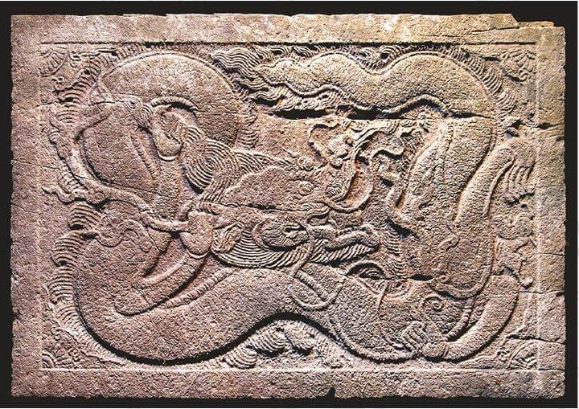

CỐ ĐÔ HOA LƯ
外仪门附近的龙床

该龙床于2017年由政府总理签署决定，被认定为国家宝物。
这里的龙床并非皇帝的床榻，而是一件祭祀用品，其功能是准备或摆放祭品。龙床采用稳固、宏伟却又不失柔美的“跪足鱼腹形”雕刻而成。最独特的艺术亮点集中在龙床表面，艺人在那里浮雕了一条线条精美、威严的神龙形象。
造就这件宝物独一无二价值的，正是民间艺人极具突破性的创造力。除了传统的尖锐龙爪外，古代艺人还巧妙地将部分龙爪变化为人类手掌的形象。龙的神圣威权与人类的亲近感之间的精妙结合，为石头注入了灵魂，创造出了一件带有浓厚哲学和审美印记的艺术作品。

丁先皇庙外仪门处的石龙床不仅是一件独特的祭祀文物，也是越南传统石雕艺术的巅峰之作。凝视这件宝物，我们更加钦佩古代雕刻艺人的才华，同时也对民族豪迈的文化遗产感到无比自豪。